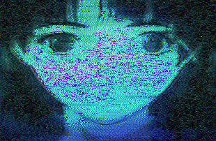
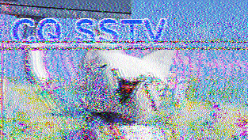
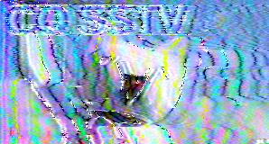
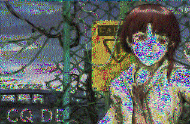

slow scan television
Martin 1, FM 145.5 MHz
SSTV, literally 'Slow Scan Television' or narrowband TV is a phone mode used for recreation. Want to bounce memes off the atmosphere? You can.
Scottie 1, FM 145.5 MHz

Robot 36, FM 145.5 MHz
SSTV works by transmitting an image line by line, with the brightness of each pixel corresponding to a different frequency. Each color channel is transmitted in a row. After recieving all 3 channels for a row, the software you use to decode SSTV will begin generating the image. There are tons of different sub-modes for SSTV that have slightly different approaches to encoding information. Some boast high fidelity or range, but slow transmit times. The most used modes tend to strike a balance.
ScottieDX
The images above are SSTV transmissions I created and re-captured. All things considered, SSTV isn't a super useful way to encode information over a radio wave- it's slow, (duh) and you can't capture a ton of fine details in an image. But it's a lot of fun, and to some people, it resembles an art form. In contrast to datamoshing, SSTV transmissions are subject to the laws of physics and the weather. It's good! I'd recommend it. (Also, you can get way better quality than what I have here right now.)
Martin 1